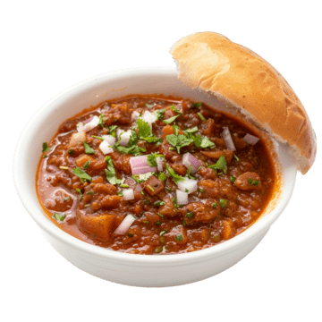

Home
Misal Pav

Description:
Misal is a popular, fiery Maharashtrian street food made from sprouted lentil curry (usal). The word translates to "mixture" in Marathi. It is layered with a spicy thin gravy (kat or rassa), crunchy farsan (savory fried mix), chopped onions, and lemon, and is typically served hot with a soft dinner roll (pav).
Misal pav from Kolhapur is known for its high spice content and unique taste.[a] There are different versions of misal pav such as Pune misal, Khandeshi misal, Nashik misal and Ahmednagar misal. Other types are kalya masalyachi misal, shev misal, and dahi (yoghurt) misal.
Ingridients:
- 1 cup sprouted matki (moth beans), 2 onions, 1 tomato
- ½ tsp cumin seeds, ¼ tsp turmeric powder, 2 tsp red chili powder, 1 tsp coriander powder
- 2 tsp goda masala (or garam masala), 1 tbsp grated coconut (optional), salt to taste, 4 to 5 cups water
- farsan, chopped onion, coriander leaves, lemon wedges, and pav for serving
- 1 tbsp ginger-garlic paste, 3 tbsp oil, ½ tsp mustard seeds
Steps:
- Heat 2 tbsp oil in a pressure cooker or pan and add mustard and cumin seeds. Once they crackle, add one finely chopped onion and sauté until golden brown.
- Add ginger-garlic paste and cook for a minute, then add chopped tomato, turmeric, 1 tsp red chili powder, coriander powder, and salt.
-
Cook until the tomatoes soften. Add the sprouted matki and about 2 tp 3 cups of water, then pressure cook for 2 to 3 whistles or simmer until the matki is tender.
-
For the kat (spicy gravy), heat 1 tbsp oil in another pan and fry the remaining sliced onion until dark brown. Add coconut (if using), goda masala, the remaining chili powder, and sauté briefly.
-
Pour in 2 cups water, add salt, and simmer for 10 minutes. To serve, place the matki usal in a bowl, pour the hot kat over it, top generously with farsan, chopped onion, coriander, and a squeeze of lemon juice.
-
Serve immediately with pav.